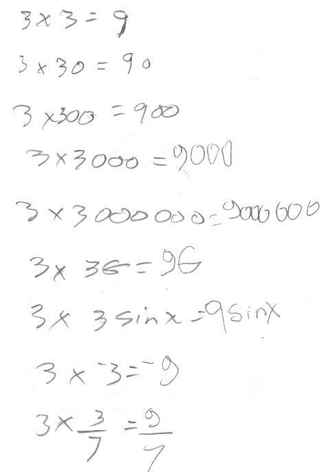

Tessa, age 6, solves equations, and subtracts with negatives
Grandpa Don only sees Tessa maybe 4 times a year ;-(. When they are together Grandpa tries to spend some time with her doing math, of course. This sessions lasted about 20 minutes.
First Grandpa checked to see if she could
multiply. She did three times three equals 9, and wrote it vertically (as she normally
does in school):
3
x3
9
Grandpa immediately went to the horizontal notation. After talking about 3 x 3 tens, she said 9 tens. Then Grandpa read each one below and she gave the correct answers, quickly.

The he gave her an equation to solve. "find a number x, multiply by 2, add 3 and you have to get 17", or "you have to find a number x to make this sentence true". Tessa figured out the first one easily. Then Grandpa gave her the second equation.
She saw that 8 was too big, and 7 was too small, so Grandpa said it had to be between 7 and 8. Tessa said there was no number that worked. Grandpa cut up some rectangular pieces of paper to represent cookies. He asked her if Grandpa gives her 7 and he wanted to share more without giving her a whole cookie, what could he do? She said one half, right away. Notice that she wrote 7\2 and Grandpa explained that that was 7 halves, not 7 and 1/2 (7 and one twoth). He showed her how to write that. He also showed her that if we have a whole cookie and we were to share between 3 people, how much would each person get? She tried cutting the cookie into 4 pieces (if we were to share between 4 people then each would get 1/4). She tried to cut the cookie diagonally, and Grandpa said it would be hard to figure out if each person got the same amount! Finally she cut up the cookie into 3 pieces and each person would have 1/3 (one-threeth) of a cookie. And they talked about how many 1/3's make a whole cookie (3/3 = 1), and how many 1/4's make a whole cookie (4/4=1).
Then Grandpa worked on negative numbers with Tessa. She had seen them before, and Grandpa used a thermometer or vertical number line below right as a "model" for adding and subtracting. First Tessa was able to go below zero, to the negatives. So for 5 - 6 Tessa said 1. Grandpa asked her what 5-5= and of course she said zero. Grandpa asked her what 5-4= and she said 1. For 5 - 6 Grandpa showed her that we start at 5, then count down 6 spaces. Where do we end up?
Once Tessa was able to do problems like that Grandpa asked her to do 24 - 15 above, and she was able to count down to get 9. Then Grandpa showed her how to use negative numbers and see if we get the same answer. He started right to left, but probably better he should have gone left to right. So
4 - 5 = -1 and 2 tens- 1 ten or twoty minus onety (normally 20 - 10) = 10, and 10 and -1, ten and take away 1 = 9, the same answer. Tessa found when doing 65 - 28, counting down 28 was much harder than using negatives. 5 - 8 = -3, and 60 - 20 = 40. So 40 -3 = 37.
Fine work, Tessa!